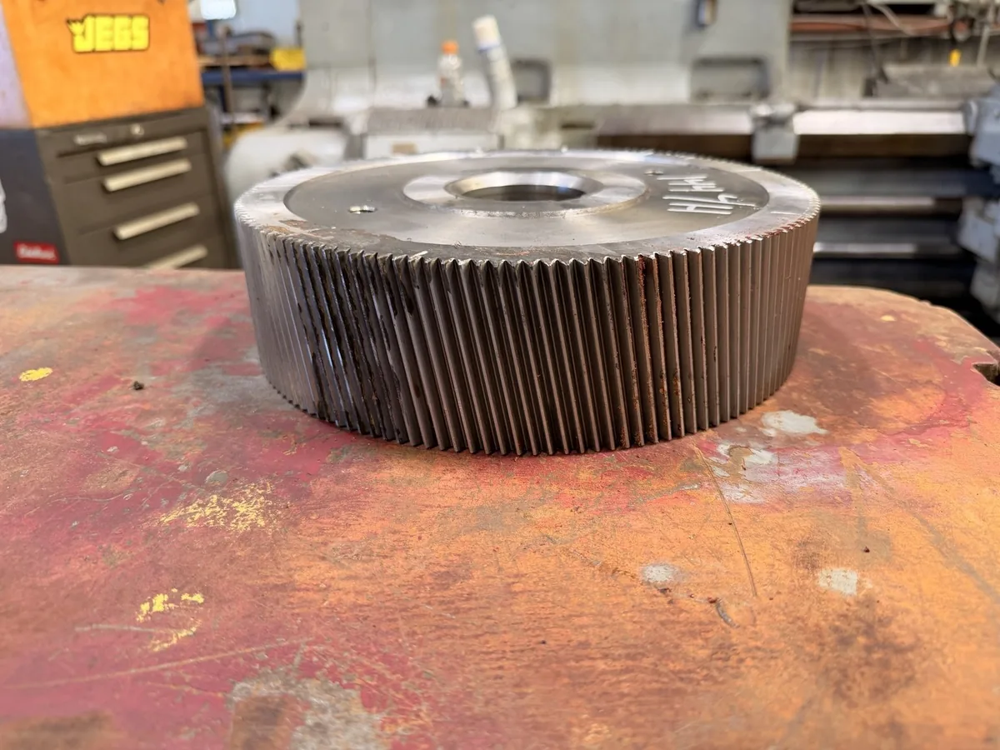
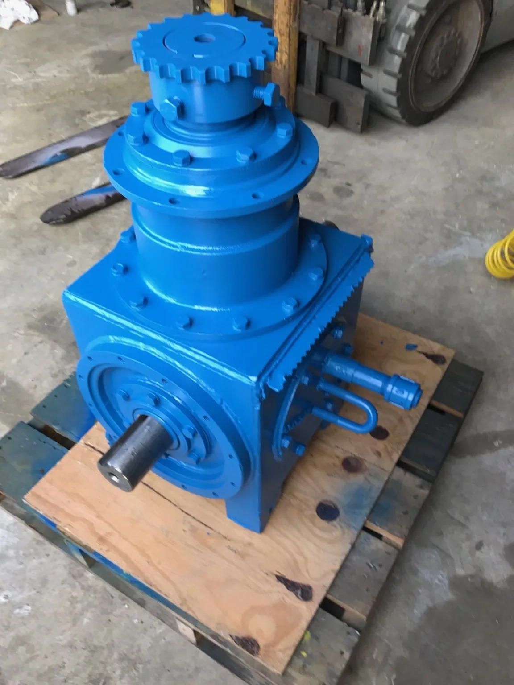
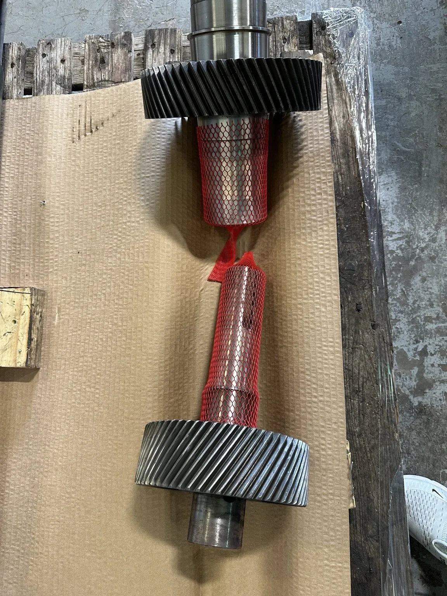
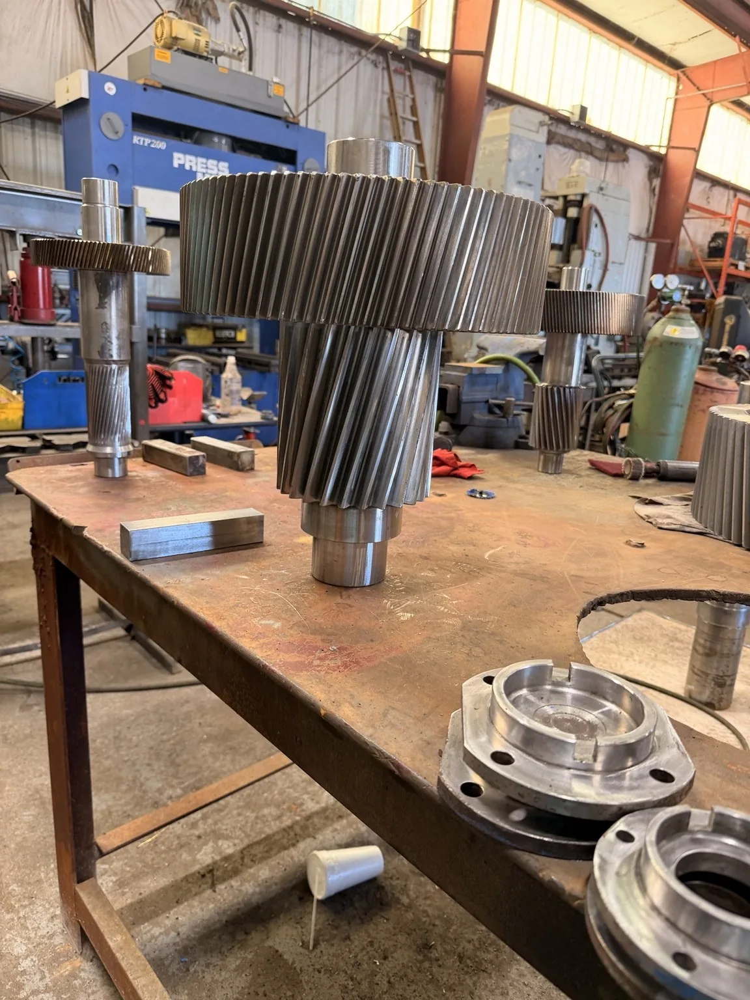
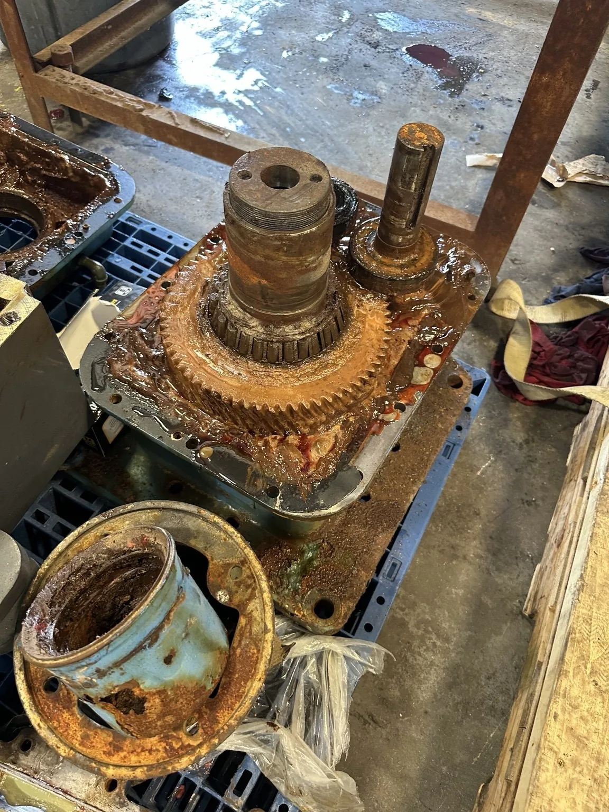
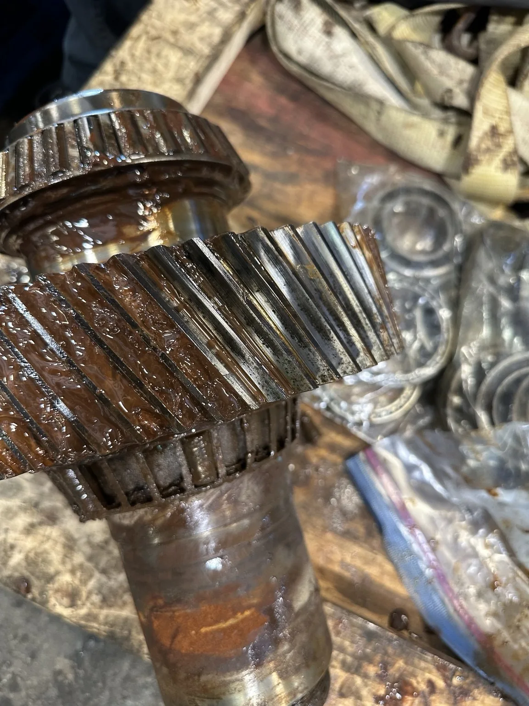
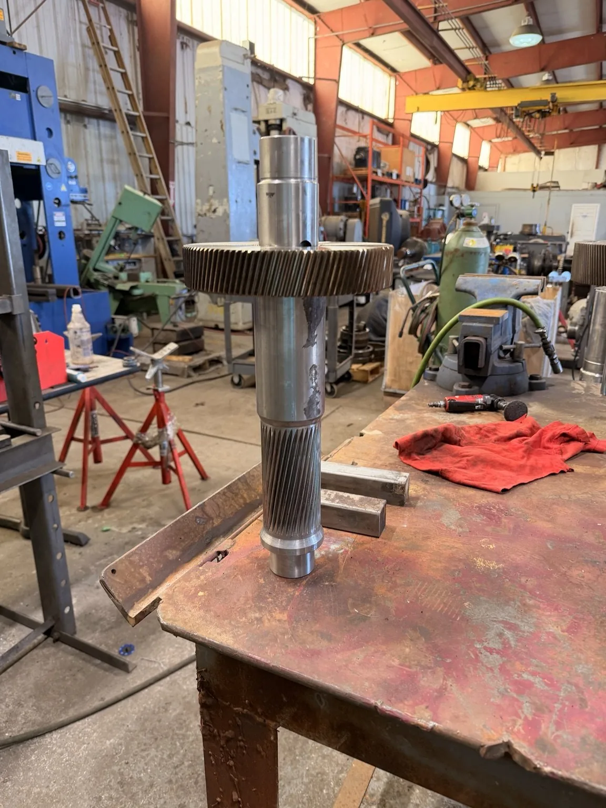
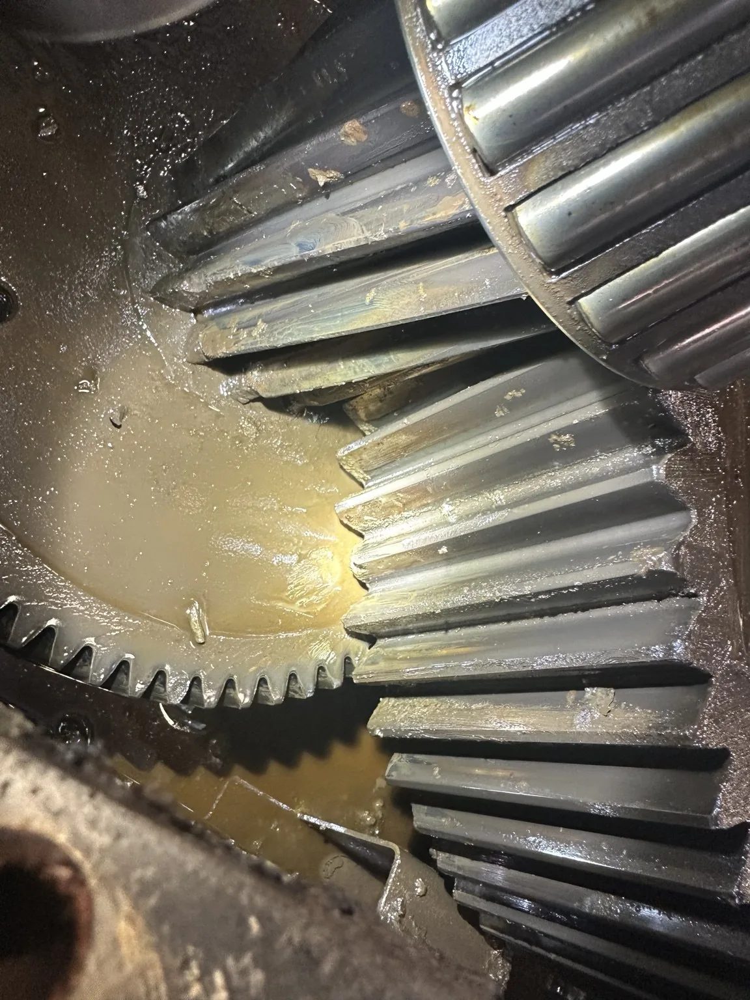

INSPECTION & REPAIR
INSPECTION & REPAIRHow does a gearbox repair assessment begin?
Understand condition, repair scope and the evidence needed before making a repair decision.
Explore the resource ↗



Industrial gearbox repair starts with identifying the equipment, documenting the symptoms, and inspecting the parts against the correct specifications. The findings guide whether to repair individual components, rebuild the assembly, or replace the unit. Industrial Gearbox Service brings together repair planning resources, manufacturer identification guides, and 33 equipment photographs to help you prepare that decision. Start with the nameplate, operating history, and available condition reports. Then define the proposed work, testing requirements, and responsibilities before approving a repair. Service suitability, timing, and the final scope must be confirmed for each application.
Gear teeth. Shaft journals. Bearing locations. Look inside the equipment, one photograph at a time.
Explore the full gallery ↗Separate equipment examples. These photos do not document a single job or establish test results.


INSPECTION & REPAIRUnderstand condition, repair scope and the evidence needed before making a repair decision.
Explore the resource ↗
GEARS & SHAFTSExplore gear geometry, shaft interfaces and the information needed to plan replacement components.
Explore the resource ↗Photographs show general equipment examples, not verified models for each service. Each page addresses a different repair decision. Equipment coverage and the actual work scope must be confirmed for your project.

Explore industrial gearbox repair: failure symptoms, diagnosis, inspection, repair options, testing, and when rebuilding or replacement makes more sense.
Read the service resource ↗
Plan an emergency gearbox repair with safe shutdown guidance, an equipment checklist, expedited inspection decisions, and repair-versus-replacement options.
Read the service resource ↗Understand gearbox rebuilding from teardown and component measurement to restoration, reassembly, testing, and the decision to rebuild or replace a reducer.
Read the service resource ↗Plan custom gear manufacturing with guidance on drawings, reverse engineering, materials, mating gears, inspection, and obsolete replacement components.
Read the service resource ↗
Explore extruder gearbox repair, including thrust support, output shafts, process loading, lubrication, inspection, and single- and twin-screw drive issues.
Read the service resource ↗
Evaluate cooling tower gearbox repair with guidance on fan-drive vibration, moisture, seals, driveshaft alignment, inspection, and return-to-service checks.
Read the service resource ↗Understand planetary gearbox repair: sun, planet and ring gears, carrier and pin inspection, backlash, uneven wear, testing, and rebuild-or-replace decisions.
Read the service resource ↗Diagnose industrial motor and pump problems across electrical, mechanical, and hydraulic systems. Review bearings, seals, repair options, and commissioning.
Read the service resource ↗Prepare a repair or parts inquiry with equipment-specific guidance for NORD, Falk, Flender, SEW-EURODRIVE, Cone Drive, Lufkin, Dodge, Marley, and Foote-Jones. Confirm service suitability for your model.
Explore gearbox brand guides ↗Organize evidence and distinguish observations from suspected causes.
Coordinate the outage, approvals, scope changes, and handover.
Compare complete project costs, timing, suitability, and uncertainty.
Prepare identification, transport, packaging, and receiving arrangements.
A useful repair proposal connects the equipment condition to a defined scope. It identifies the components to inspect, the acceptance criteria, and the work that requires your approval. Ask which tests are included and which installation checks remain your responsibility. Keep the findings and handover records with the equipment history so that later inspections have a clear baseline.
About Industrial Gearbox Service ↗The site contains 8 service resources and 4 maintenance planning guides. The 33-photo gallery illustrates equipment condition and component arrangements. These counts describe the published resources, not completed jobs or proven repair outcomes.
| Option | Decision to evaluate | Evidence to request |
|---|---|---|
| Localized repair | Is the fault confined to specific parts? | Inspection findings and acceptance criteria for parts proposed for reuse. |
| Rebuilding | Does the assembly need a broader overhaul? | Teardown measurements, component disposition, assembly records, and testing scope. |
| Replacement | Is repair unsuitable or impractical for the required duty? | Fit, ratio, duty suitability, installation changes, lead time, and total project cost. |
NORD’s service guidance treats leakage, noise, temperature, and vibration as separate diagnostic questions. Its oil guidance points users to the unit nameplate and operating instructions. This supports using the exact unit documentation instead of assuming one oil grade or fill quantity fits every gearbox. Source: NORD service FAQ.
SKF’s research describes how contamination, corrosion, poor lubrication, and sliding conditions can contribute to wear and surface fatigue in rolling bearings. A damaged bearing should therefore be assessed alongside its lubricant and operating conditions. This is a failure-analysis principle, not a failure-rate estimate for your gearbox. Source: SKF wear and surface fatigue research.
The U.S. Department of Energy identifies reliability-centered maintenance as an approach to organizing operations and maintenance. A practical repair handover should preserve the findings and establish what to monitor next. Site-specific records are needed to judge future changes; a generic checklist cannot establish a gearbox’s remaining life. Source: Department of Energy maintenance guidance.
SKF’s 2022 bearing investigation summary reports abrasive wear in 26% of the failure modes identified. That percentage describes SKF’s investigation dataset, not all industrial gearboxes or this business’s repair history. The useful maintenance question is whether inspection and lubricant evidence support a contamination or lubrication problem. SKF investigation findings and dataset context.
The same SKF study reports surface-initiated fatigue at 16%. The article links this damage mechanism with surface distress, poor lubrication, and poor cleanliness. Seeing a damaged surface does not establish its initiating cause; document the pattern and compare it with the operating history.
SKF’s published data also identifies moisture corrosion at 14%. Its discussion connects moisture ingress with bearing damage. For a repair assessment, retain information about storage, washdown, sealing, lubricant condition, and downtime. These records help an investigator evaluate a possible moisture pathway.
The International Organization for Standardization’s ISO 15243:2017 classification, summarized by SKF, groups operating bearing damage into 6 main categories: rolling contact fatigue, wear, corrosion, electrical erosion, plastic deformation, and cracking or fracture. Classification describes the damage mechanism; it does not by itself establish the root cause.
NORD’s selection guidance defines output speed as input speed divided by the reduction ratio. For an illustrative 4:1 reduction with an actual input of 1,800 rpm, the calculated output is 450 rpm, or 25% of input speed. This example explains the arithmetic; it does not identify a gearbox’s rated capacity. NORD selection information (PDF).
Record the nameplate ratio and actual operating speed separately. A motor’s nominal rating is not a measurement of its running speed. Variable-speed operation also changes the input. If output appears wrong, compare the records before concluding that the gearing has failed. The required direction of rotation and connected machine requirements also belong in the assessment.
A useful dimensional record identifies the component, measurement location, instrument, unit, result, and comparison requirement. A number without its acceptance basis cannot establish that a shaft, bore, or gear should be reused. Ask where the requirement came from: an applicable drawing, manufacturer documentation, or a formally agreed engineering specification. Keep revisions identifiable so later inspections compare like with like.
Separate three statements in the report: what was observed, what was measured, and what is suspected. A visible mark is an observation. A documented dimension is a measurement. An explanation for the mark is a hypothesis until supported by evidence. This distinction helps maintenance and purchasing teams discuss the same findings without turning an early assumption into an approved repair scope.
Read the test conditions before treating a passed test as proof of production readiness. Identify the speed, load, duration, lubricant, mounting arrangement, instruments, and acceptance requirements recorded. A workshop test and an installed machine can have different conditions. State which checks remain after installation, who performs them, and where the results will be retained. The repair proposal should define these responsibilities before shipment.
Keep baseline readings with the equipment record. Later comparisons are more useful when measurement location, speed, load, and instrument method are consistent. A changed reading warrants investigation, but the number alone does not provide a universal shutdown limit. Use the equipment’s instructions and the facility’s approved condition-monitoring criteria for operating decisions.
Use these 4 steps to organize existing records for a service discussion. This is an information checklist, not a disassembly or repair procedure.
Record the manufacturer, model, serial number, ratio, and application from existing nameplate photographs and records. Mark unknown fields instead of guessing.
Note when noise, heat, leakage, vibration, or lost output began. Record the speed, load, alarms, and recent maintenance where known.
Collect available inspection reports, lubricant records, drawings, and condition-monitoring results. Keep observations separate from suspected causes.
Enter the equipment details, symptoms, location, and timing in the form below. Select Save repair brief to download your notes. The form does not transmit them.
An assessment identifies the equipment, records its condition, and compares findings with applicable specifications. The approved scope may include component replacement or restoration, reassembly, and agreed verification. The exact work depends on the inspection results.
A localized repair targets a defined fault. Rebuilding considers the assembly as a whole, with teardown, measurement, and a broader review of components. Neither term guarantees that every part will be replaced.
Compare measured condition, suitability for the application, parts availability, installation changes, project cost, and lead time. There is no universal cost percentage that decides every case. Use a written comparison and documented acceptance criteria.
Gather the manufacturer, model, serial number, ratio, application, symptoms, operating history, and required timing. Existing nameplate photographs, drawings, inspection reports, and lubricant records help define the assessment.
No. The gallery contains separate equipment examples grouped into teardown and inspection, gear and shaft components, assembly stages, and additional gearbox examples. The photographs do not establish a single repair history or measured test results.
No. The form downloads a text file to your device. It does not email a repair team, upload photographs, book service, or arrange transport. Keep the file for your service discussion.
Record the make, model, symptoms, and deadline while the details are fresh. Save a repair brief for your maintenance team.
Choose Open email draft to prepare an inquiry in your email app, then review and send it. You can also save a copy. Nothing is sent automatically. Email: industrialgearboxservices@gmail.com.